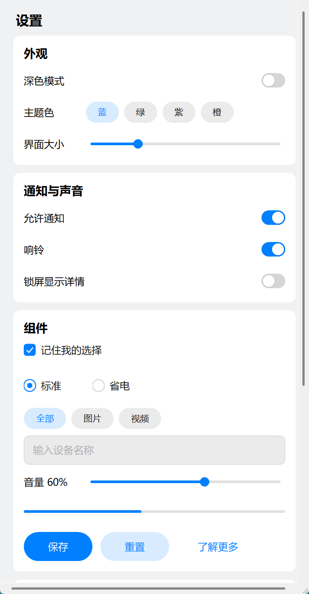
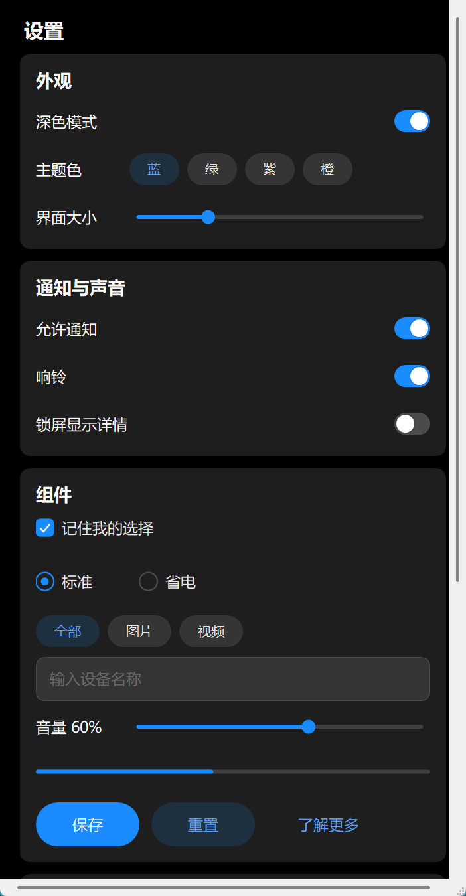
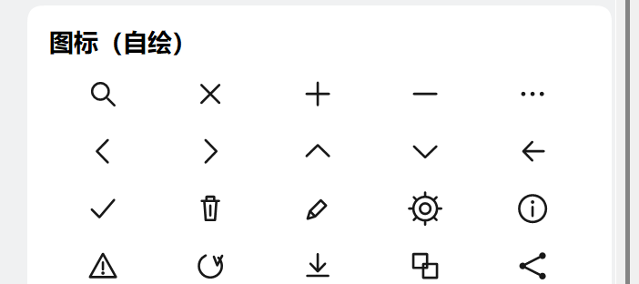

按 ColorOS 17（COUI）的令牌做的一套 WinForms 控件库：12dp 超椭圆卡片、44dp 胶囊按钮、10dp 输入框；20 个图标全部自绘，透明度只靠底色合成，不做毛玻璃。
截图来自 samples/CouiSharp.Demo，启动参数 --light / --dark 可复现。


数值直接来自 COUI 的 Colors.kt 与重定主题规范，不是凭观感估的。
| 类别 | 取值 | 用途 |
|---|---|---|
| 强调色 | #0080FF / #1A8CFF | 主按钮、开关、滑杆、焦点环 |
| 页面 / 卡片 | #F0F1F2 + #FFFFFF | 设置页底色与 12dp 卡片 |
| 文字层级 | 90% / 54% / 26% | 主文案、次要说明、提示 |
| 分隔线 | 12% 前景色 | 行间与卡片描边 |
| 圆角 | 卡片 12dp、按钮胶囊、输入框 10dp | 形状体系 |
| 尺寸 | 按钮 44dp、开关 36×22、行高 48dp | 组件度量 |
| 字体 | 正文 15sp、说明 13sp、标题 18/20sp | TextStyles.kt |
24dp 画布、1.5dp 圆头描边、2dp 安全边距，GraphicsPath 直接写在代码里，任意 DPI 清晰、颜色随主题。

Kind / IconSize / Tint 三个属性，默认跟随主题前景色。
FillsBackdrop = false：图标不会在自己脚下铺一块页面颜色的方块。
COUI 图标是从 ColorOS 系统包描出来的，授权不清；自绘既干净又能按需加。
全部自绘：先铺解析出的底色，再画超椭圆路径，不用 Region 裁圆角。
12dp 卡片容器，可选描边与按压反馈。
胶囊四态：Primary / Tonal / Text / Danger。
36×22dp，18dp 拇指，空格与回车可切换。
18dp 方框，自绘对勾，整行可点。
18dp 圆环，GroupName 自动互斥。
32dp 筛选标签，选中转 15% 强调色底。
10dp 输入框，内嵌原生 TextBox 保 IME 与选区。
4dp 轨道，方向键 / Home / End 可调。
4dp 胶囊，确定与不确定两种模式。
CouiTheme.Mode = CouiThemeMode.Dark;
CouiTheme.SeedColor = Color.FromArgb(0xFF, 0x00, 0xBD, 0x13);
var card = new CouiCard { Bounds = new Rectangle(16, 16, 400, 160) };
var title = new CouiLabel {
Text = "外观",
Font = CouiTypography.Header(),
Bounds = new Rectangle(16, 12, 360, 28)
};
var toggle = new CouiSwitch { Checked = true, Location = new Point(340, 60) };
var save = new CouiButton {
Text = "保存",
Variant = CouiButtonVariant.Primary,
Location = new Point(16, 100)
};
card.Controls.AddRange(new Control[] { title, toggle, save });
| 圆角 | 不裁 Region：150% DPI 下会变成虚线边，改为按路径绘制。 |
|---|---|
| 底色 | 自绘前先解析父级链路（含自定义 SurfaceColor），圆角外不会露出异物。 |
| 文字 | 半透明令牌先与底色合成，再交给 TextRenderer，避免 GDI 把 26% 文字画成纯黑。 |
| 字体 | 点数本身随 DPI 走，只额外乘用户显示比例，避免 150% 下双重放大。 |
| 毛玻璃 | 不做。CPU 模糊只能看到库自己画的像素，系统背板只给整个顶层窗口，两者都给不了页面内控件的透明底。 |
| 度量 | 句柄创建、DPI 变化、主题变化、尺寸变化都会触发 ApplyMetrics 重算。 |